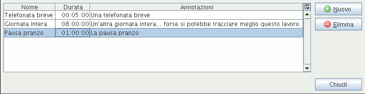

Editor Modelli di azioneCon questo editor è possibile gestire una lista di modelli di azione. Essi servono quando ci si trova a dover tracciare ripetutamente dei lavori con la stessa descrizione o durata. L'editor è richiamabile tramite il menù |Strumenti|Modelli| oppure dalla finestra “Aggiungi azione”.
 L'editor dei modelli è costituito da una semplice tabella che mostra una riga per ogni modello definito. Per aggiungere un nuovo modello cliccare sul pulsante Nuovo. Apparirà una nuova riga nella tabella da compilare con nome, durata e descrizione appropriatiper il modello che si vuole definire. Per eliminare il modello selezionato, cliccare sul pulsante Elimina. Per modificare un modello, selezionare la cella da modificare e fare doppio click con il mouse, oppure premere il tasto funzione F2. |